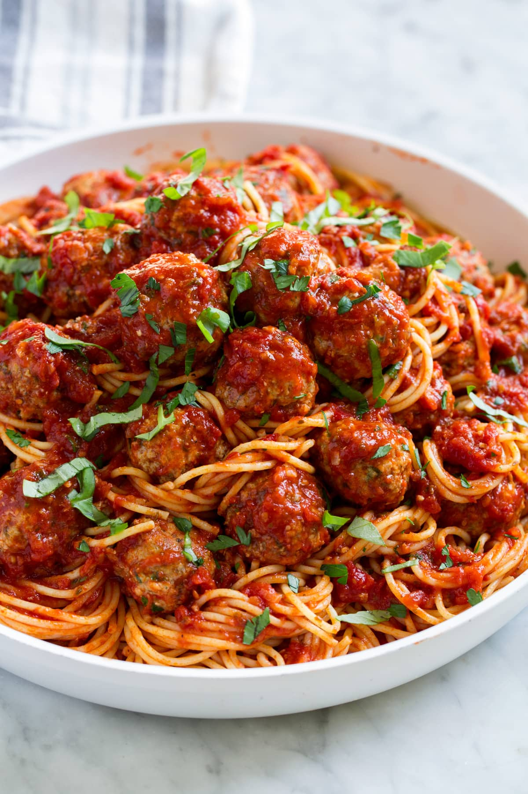

Meatballs

Description
These classic Italian-American style meatballs are huge and pillowy soft! They're mixed with ground beef and pork, loaded with herbs and cheese, and served with a traditional tomato sauce. Make them baseball-sized for a dinner entree, or roll them smaller for an appetizer.
Ingridients
For the meatballs:
- 1 pound ground beef (at least 16 percent fat)
- 1 pound ground pork
- 2/3 cup milk (whole or 2 percent)
- 3 slices of white bread, crusts removed (about 3 ounces)
- 1/4 cup ricotta cheese
- 1/4 cup grated Parmesan or Romano cheese
- 2 large eggs
- 1 teaspoon salt (or 2 teaspoons kosher salt)
- 1 tablespoon chopped fresh parsley
- 2 teaspoons black pepper
- 1 teaspoon dried oregano or marjoram
- 2 to 3 cloves garlic, minced
- About 1 cup flour, for dusting
- 1/3 cup extra virgin olive oil
- 2 1/2 cups (24 ounces) tomato sauce (recipe follows, or use already prepared)
For the tomato sauce:
- 2 tablespoons extra virgin olive oil
- 3/4 cup finely chopped onions
- 3/4 cup finely chopped carrots
- 3/4 cup finely chopped celery
- 2 tablespoons chopped fresh parsley
- 1 clove garlic, minced
- 1 (28-ounce) can crushed or whole tomatoes, including the juice, or 1 3/4 pound of fresh tomatoes peeled, seeded, and chopped
- 1/2 teaspoon dried basil or 2 tablespoons chopped fresh basil
- 1 teaspoon tomato paste
- Salt and freshly ground black pepper to taste
How to make Meatballs
When I get a craving for meatballs, I have a very specific meatball in mind: They’re completely tender all the way through without even a hint of toughness. They’re big enough to require a fork, but modest enough to justify several on the plate. Maybe some onions and fresh herbs mixed in. Nothing fancy. Totally old-school.
- Combine the milk and breadcrumbs. Place the breadcrumbs in a small bowl, pour in the milk, and stir to combine. Set aside while preparing the rest of the meatball mixture. The breadcrumbs will absorb the milk and become soggy.
- Whisk the egg, salt, pepper, Parmesan, and parsley. Whisk the egg in a large bowl until broken up. Add the Parmesan, parsley, salt, and a generous quantity of black pepper, and whisk to combine.
- Add the ground meat. Add the meat to the egg mixture. Use your hands to thoroughly mix the egg mixture into the ground meat.
- Add the onions and soaked breadcrumbs. Add the onions, garlic, and soaked breadcrumbs. Mix them thoroughly into the meat with your fingers. Try not to overwork the meat; pinch the meat between your fingers rather than kneading it.
- the meat into meatballs. Have a rimmed baking sheet ready. Pinch off a piece of the meat mixture and gently roll between your hands to form 1 1/2-inch meatballs (about 2 tablespoons each). Continue shaping until all the meat is used, placing the meatballs on the baking sheet so that they are not touching.
- Option 1: Roast or broil the meatballs in the oven. Broil the meatballs on a rimmed baking sheet for 20 to 25 minutes, or roast at 400°F for 25 to 30 minutes. (Watch closely if making meatballs made with lean meat.) The meatballs are done when cooked through, the outsides are browned, and they register 165°F in the middle on an instant-read thermometer. Serve immediately.
- Option 2: Cook the meatballs directly in sauce. Bring a marinara or other pasta sauce to a simmer and add as many meatballs as will fit comfortably in the pan. Cover and simmer for 30 to 35 minutes. The meatballs are done when they're cooked through and register 165°F in the middle on an instant-read thermometer. Serve immediately.